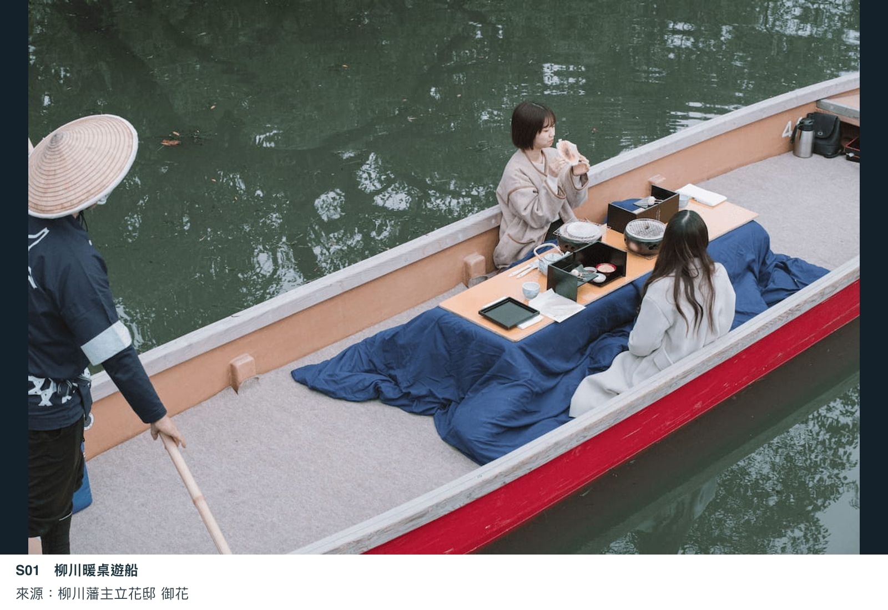S01 · 已排景點柳川暖桌遊船冬季暖桌船參考照；畫面餐食與包船配置不代表已預訂內容。來源：柳川藩主立花邸 御花開啟原始來源頁 · 下載 JPG來源與原圖尺寸1200 × 801 px；圖片版面 1600 × 1100 px。依原站條款，未取得額外公開使用授權取得日期 2026-11-19
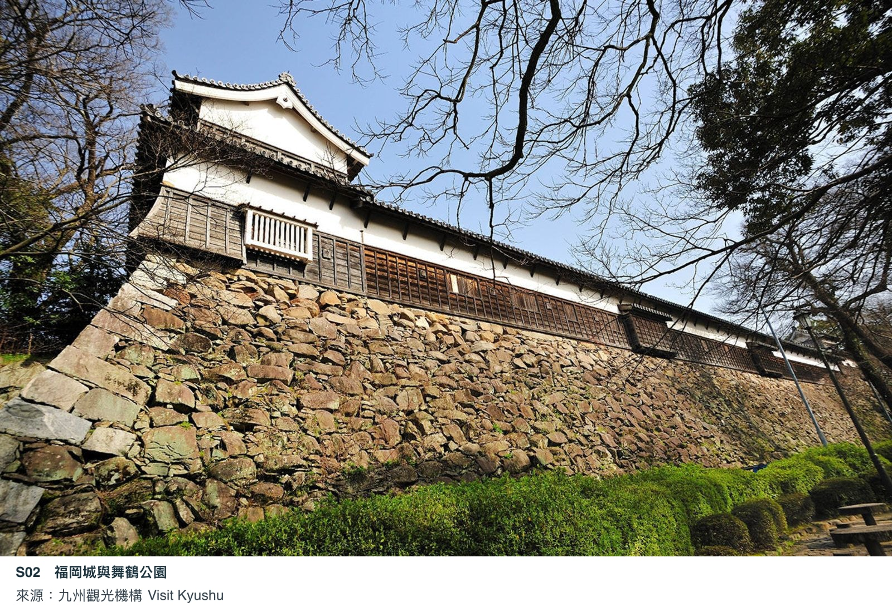S02 · 已排景點福岡城與舞鶴公園選用無滿開櫻花的城跡照，避免將二月行程誤呈現為賞櫻。來源：九州觀光機構 Visit Kyushu開啟原始來源頁 · 下載 JPG來源與原圖尺寸1600 × 1000 px；圖片版面 1600 × 1100 px。依原站條款，未取得額外公開使用授權取得日期 2026-11-19
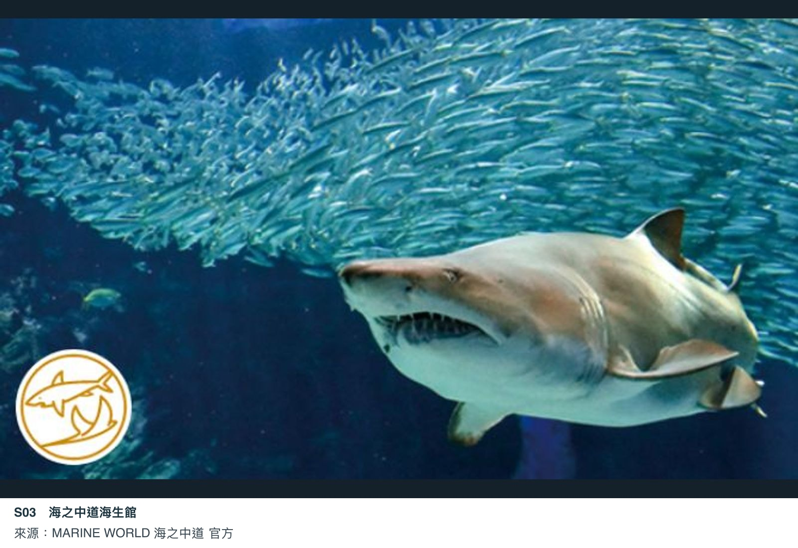S03 · 已排景點海之中道海生館官方外洋大水槽照；未採用旅行期間暫停的海獅海豚秀照片。來源：MARINE WORLD 海之中道 官方開啟原始來源頁 · 下載 JPG來源與原圖尺寸668 × 386 px；圖片版面 1600 × 1100 px。依原站條款，未取得額外公開使用授權取得日期 2026-11-19
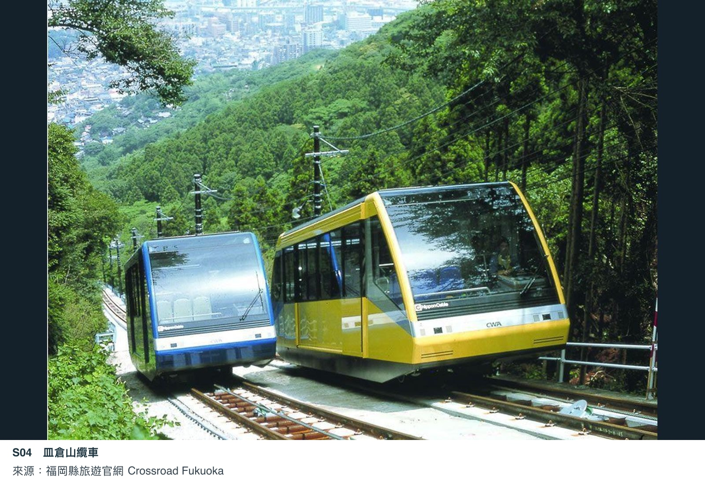S04 · 已排景點皿倉山纜車供上山與下山時段共用，實際班次另行確認。來源：福岡縣旅遊官網 Crossroad Fukuoka開啟原始來源頁 · 下載 JPG來源與原圖尺寸1000 × 722 px；圖片版面 1600 × 1100 px。依原站條款，未取得額外公開使用授權取得日期 2026-11-19
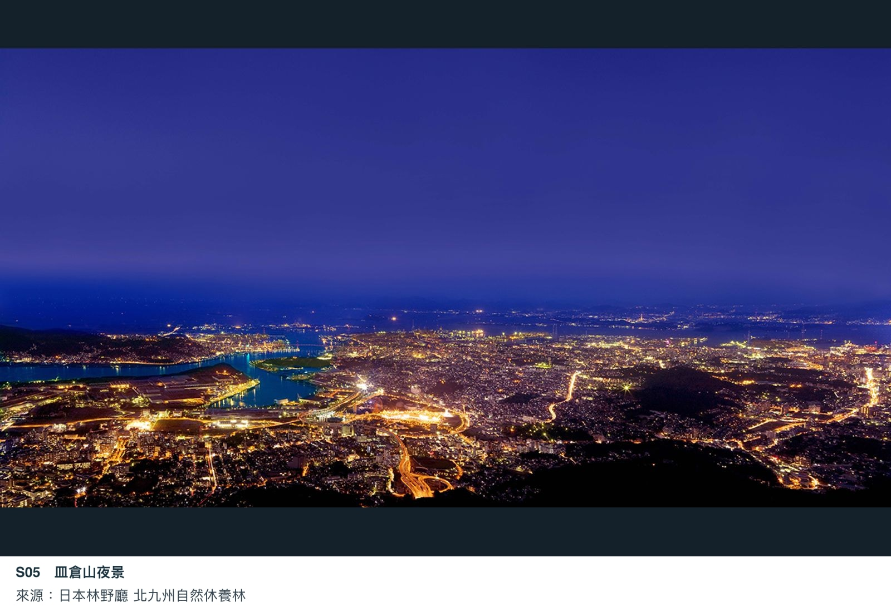S05 · 已排景點皿倉山夜景景色與能見度因當日條件而異。來源：日本林野廳 北九州自然休養林開啟原始來源頁 · 下載 JPG來源與原圖尺寸1280 × 660 px；圖片版面 1600 × 1100 px。依原站條款，未取得額外公開使用授權取得日期 2026-11-19
S06 · 已排景點LaLaport 福岡實物大鋼彈官方夜間宣傳照片作地標辨識，不表示行程改成晚上看鋼彈。來源：Bandai Namco Amusement / PR TIMES開啟原始來源頁 · 下載 JPG來源與原圖尺寸1789 × 1260 px；圖片版面 1600 × 1100 px。依原站條款，未取得額外公開使用授權取得日期 2026-11-19
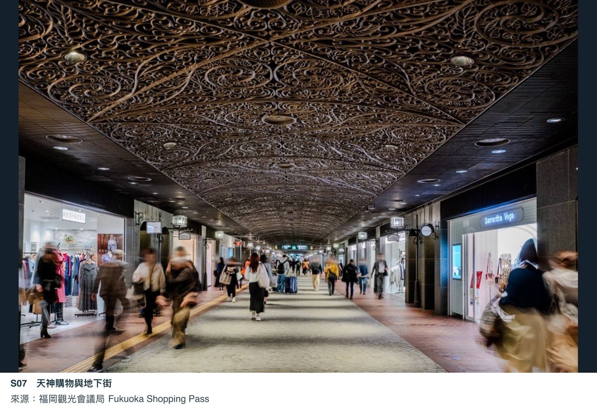S07 · 已排景點天神購物與地下街用於天神購物，也可暫代一般市區採買；採買地點未定時另標示為示意。來源：福岡觀光會議局 Fukuoka Shopping Pass開啟原始來源頁 · 下載 JPG來源與原圖尺寸1024 × 683 px；圖片版面 1600 × 1100 px。依原站條款，未取得額外公開使用授權取得日期 2026-11-19
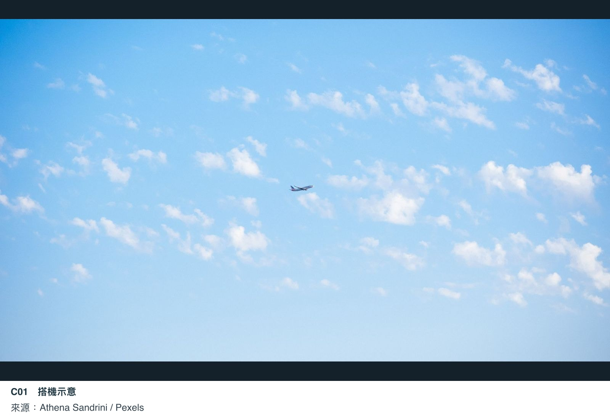C01 · 共用搭機示意通用航空照片，非本次航班或機型。來源：Athena Sandrini / Pexels開啟原始來源頁 · 下載 JPG來源與原圖尺寸1800 × 1011 px；圖片版面 1600 × 1100 px。Pexels 圖庫頁標示 Free to use取得日期 2026-11-19
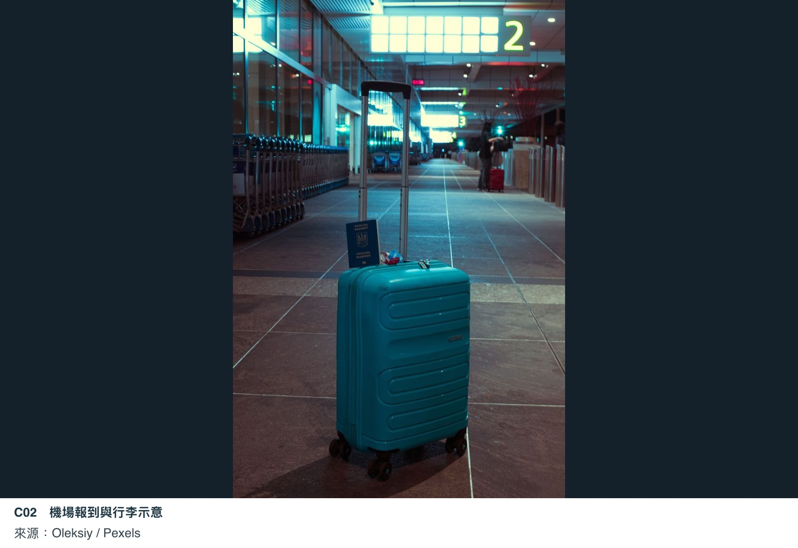C02 · 共用機場報到與行李示意通用機場示意，非桃園或福岡機場實景。來源：Oleksiy / Pexels開啟原始來源頁 · 下載 JPG來源與原圖尺寸1800 × 2704 px；圖片版面 1600 × 1100 px。Pexels 圖庫頁標示 Free取得日期 2026-11-19
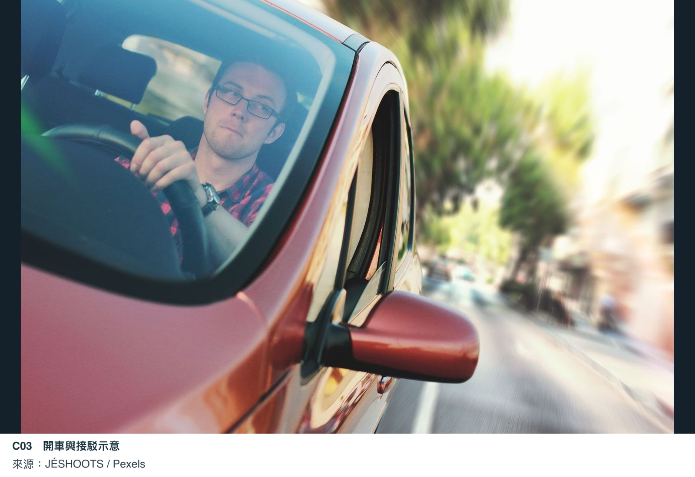C03 · 共用開車與接駁示意所有開車、接駁、取還車與停車時段共用；不是已選車型或日本行車指引。來源：JÉSHOOTS / Pexels開啟原始來源頁 · 下載 JPG來源與原圖尺寸1800 × 1198 px；圖片版面 1600 × 1100 px。原圖庫頁標示 Free to use CC0取得日期 2026-11-19
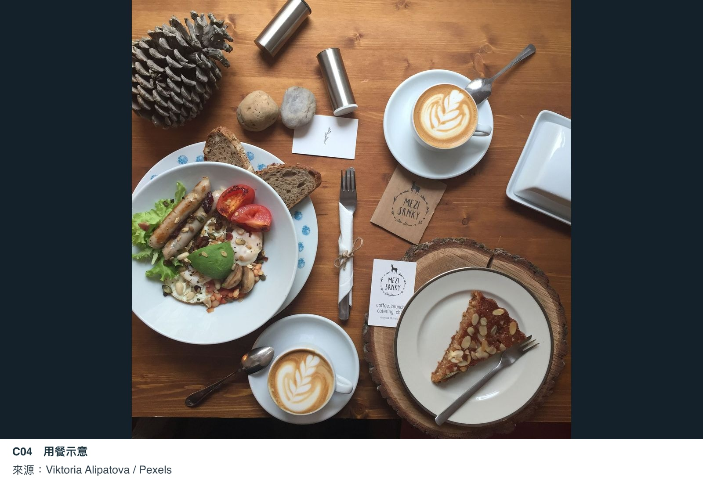C04 · 共用用餐示意早餐、午餐、晚餐共用同一張；不是本次餐廳或菜色，確定餐廳後替換。來源：Viktoria Alipatova / Pexels開啟原始來源頁 · 下載 JPG來源與原圖尺寸1800 × 1800 px；圖片版面 1600 × 1100 px。Pexels 圖庫頁標示 Free取得日期 2026-11-19
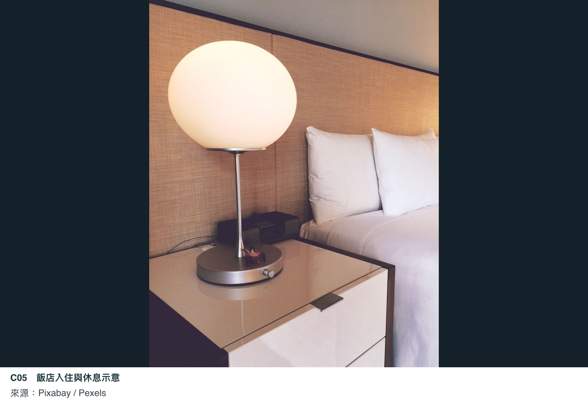C05 · 共用飯店入住與休息示意入住、午睡與休息共用；不是已訂飯店，亦不代表房型。來源：Pixabay / Pexels開啟原始來源頁 · 下載 JPG來源與原圖尺寸1800 × 2285 px；圖片版面 1600 × 1100 px。Pexels 圖庫頁標示 Free取得日期 2026-11-19
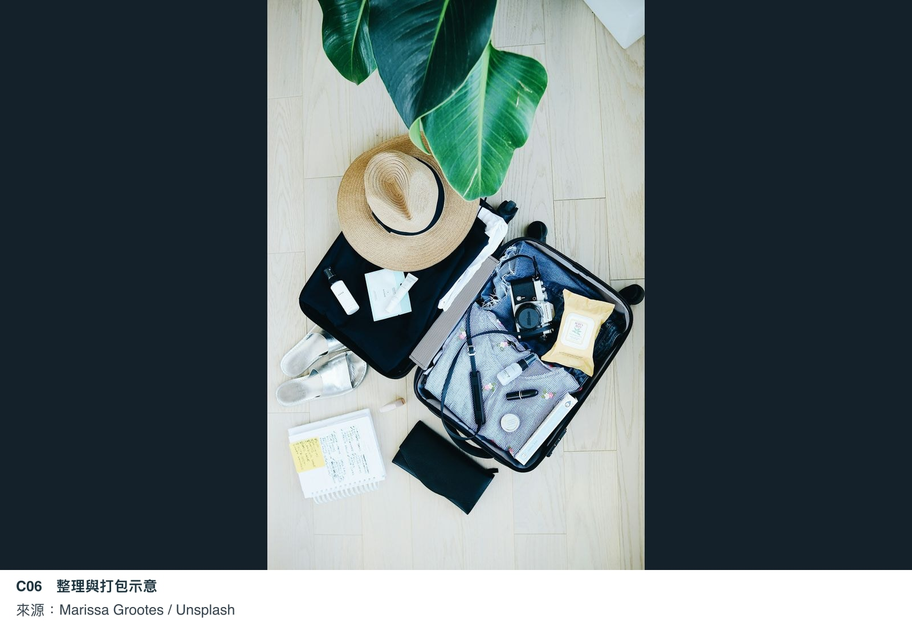C06 · 共用整理與打包示意整理、打包、退房準備與行李寄放共用。來源：Marissa Grootes / Unsplash開啟原始來源頁 · 下載 JPG來源與原圖尺寸1800 × 2718 px；圖片版面 1600 × 1100 px。Unsplash 圖庫頁標示 Unsplash License取得日期 2026-11-19
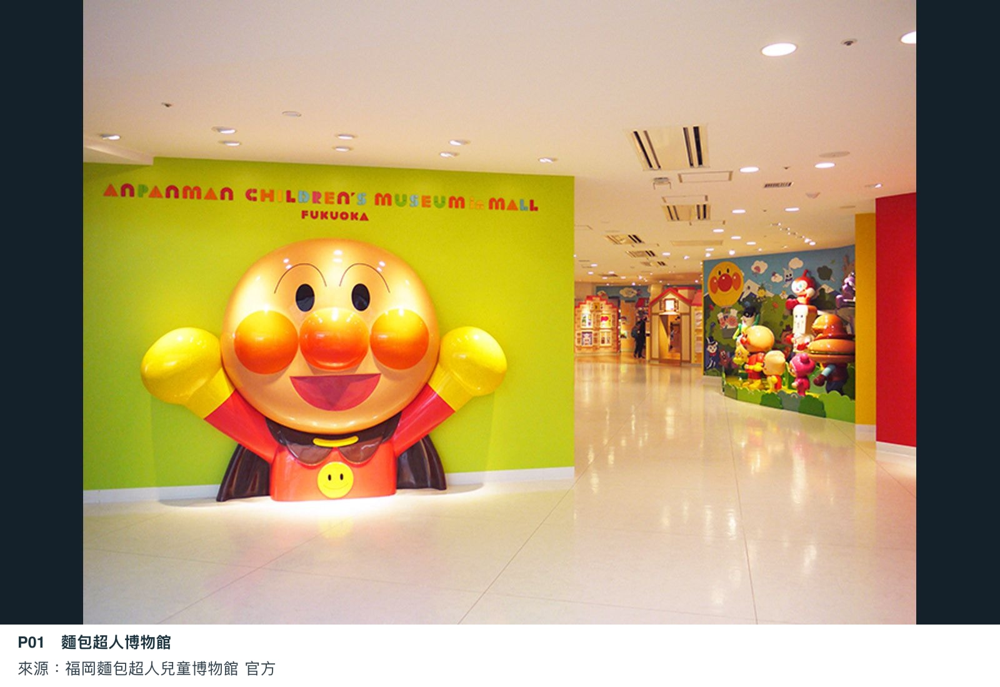P01 · 待安排麵包超人博物館必去但日期待安排；不指定為 2/6 或 2/8，也不替換柳川。來源：福岡麵包超人兒童博物館 官方開啟原始來源頁 · 下載 JPG來源與原圖尺寸760 × 570 px；圖片版面 1600 × 1100 px。依原站條款，未取得額外公開使用授權取得日期 2026-11-19
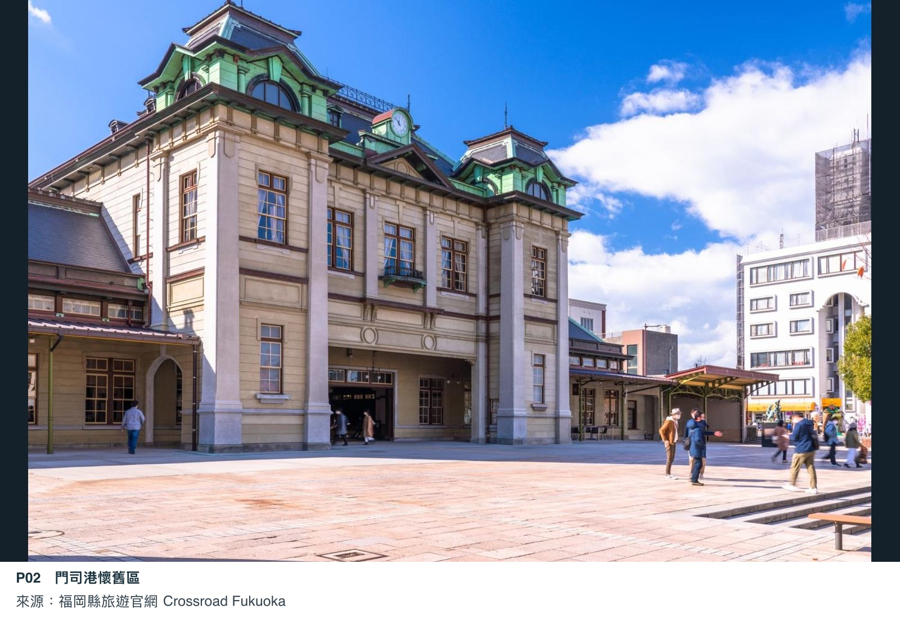P02 · 待確認門司港懷舊區原行程景點，是否保留待討論；未插入 2/7 時間表。來源：福岡縣旅遊官網 Crossroad Fukuoka開啟原始來源頁 · 下載 JPG來源與原圖尺寸1400 × 934 px；圖片版面 1600 × 1100 px。依原站條款，未取得額外公開使用授權取得日期 2026-11-19